Click ที่ภาพด้านล่างเพื่อเข้าไปดูได้เลย


===================================
มันคงจะงงน่าดูเมื่อเจอกับ Option ที่คำอธิบายมันไม่ตรงกับที่ให้ปรับ....
แถมบางอันก็ไม่เข้าใจว่ามันปรับอะไรอีก..............
===================================
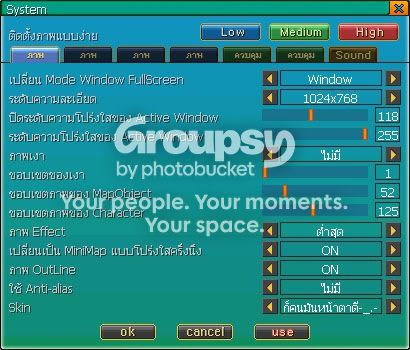
เปลี่ยน Mode Window Full Screen
ปรับหน้าจอของเกมให้เป็นแบบ Window (จอเล็ก) หรือ Fullscreen (เต็มจอ)
ระดับความละเอียด
ความละเอียดของภาพนั่นเอง
โหมด Window จะปรับได้
800*600 / 960*600 / 1024*768 / 1088*612 / 1152*864 / 1440*900 / 1920*1050
โหมด Full Screen จะปรับได้
16 Bit
800*600 / 960*600 / 1024*768 / 1088*612 / 1152*864 / 1280*720 / 1280*768 / 1280*800 / 1280*960 / 1280*1024
32 Bit
800*600 / 960*600 / 1024*768 / 1088*612 / 1152*864 / 1280*720 / 1280*768 / 1280*800 / 1280*960 / 1280*1024
ปิดระดับความโปร่งใสของ Actove Window
ปรับความโปร่งใสของ Window ในส่วนที่ไม่ได้ใช้
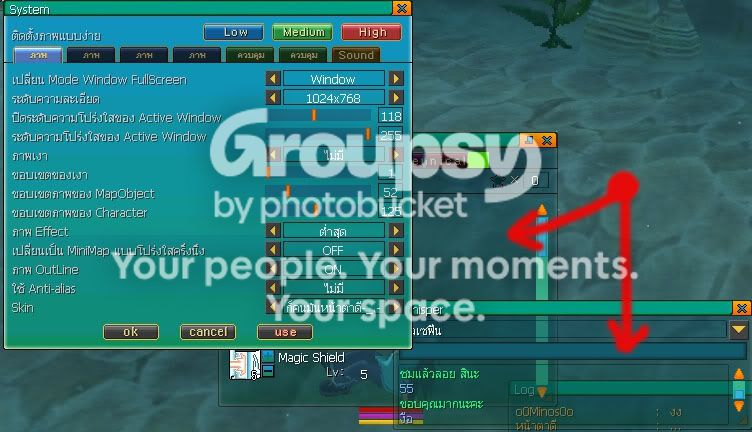
ที่ 255 จะไม่มีความโปร่งใส ส่วนที่ 0 จะมองไม่เห็นเลย
ระดับความโปร่งใสของ Actove Window
ปรับความโปร่งใสของ Window ในส่วนที่เราใช้งานอยู่
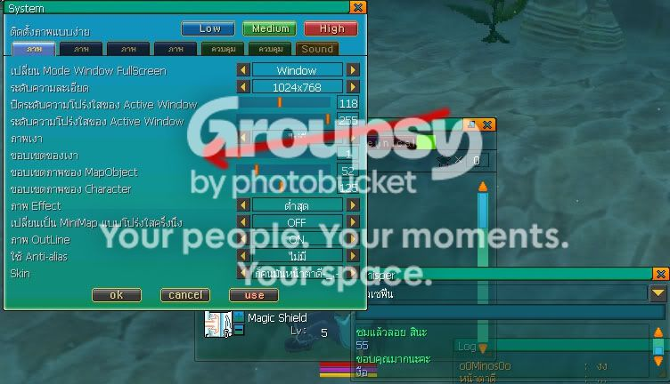
ที่ 255 จะไม่มีความโปร่งใส ส่วนที่ 0 จะมองไม่เห็นเลย
ภาพเงา
ปรับการแสดงเงา โดยจะมีทั้งหมด 3 แบบคือ
ไม่ีมี
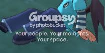
วงกลม
แบบปกติ
ขอบเขตภาพเงา
ระยะที่จะแสดงเงา
ปรับที่ 0
ปรับที่ 50+(ขึ้นอยู่กับระยะของเป้าหมายด้วย)
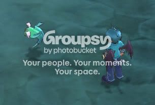
ขอบเขตภาพของ MapObject
ระยะที่จะแสดงวัตถุประกอบฉาก
ปรับที่ 0
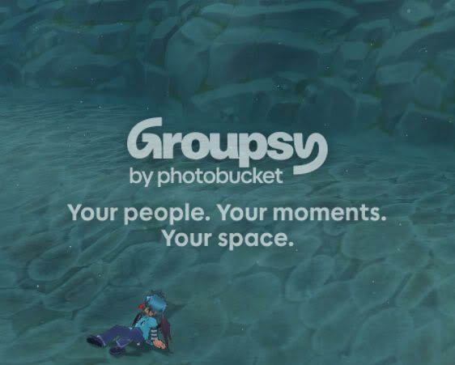
ปรับที่ 50+(ขึ้นอยู่กับระยะของเป้าหมายด้วย)
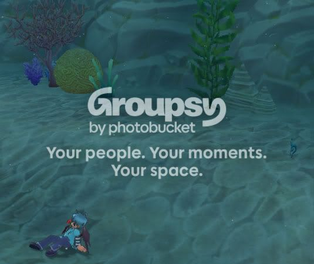
ขอบเขตภาพของ MapObject
ระยะที่จะแสดงตัวละคร
ปรับที่ 0
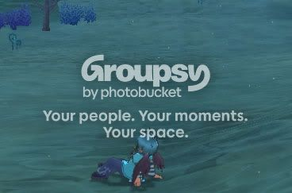
ปรับที่ 50+(ขึ้นอยู่กับระยะของเป้าหมายด้วย)
ภาพ Effect
เพิ่ม-ลดรายละเอียดของ Effect มี 3 แบบคือ
ต่ำสุด
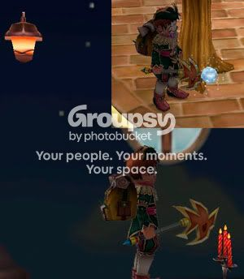
ปานกลาง
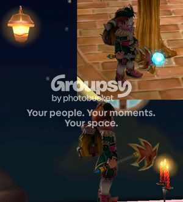
ทั้งหมด
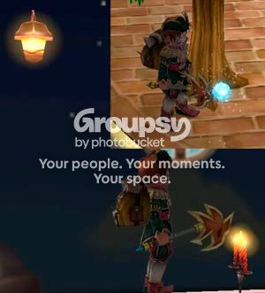
เปลี่ยน MiniMap เป็นแบบโปร่งใสครึ่งนึง
ไม่ต้องบอกล่ะมั้ง มันก็บอกให้เรียบร้อยแล้วล่ะ
On
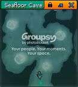
Off
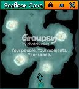
ภาพ OutLine
เปิด-ปิดเส้นขอบของภาพ
On
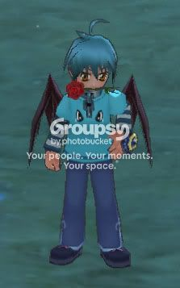
Off
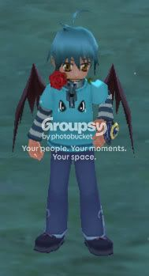
ใช้ Anti-Alias
ปรับความสวยงามของเส้นภาพที่มีลักษณะเฉียง มี 3 แบบคือ
ไม่มี
นำมาใช้
กึ่งกลางระหว่างทั้งสองแบบน่ะ
เหมาะที่สุด
อันนี้ตรงขอบจะคมชัดกว่าน่ะ..
Skin
เลือก Skin หรือ Intrerface (ซึ่งเราต้องมีอยู่ในเครื่อง)
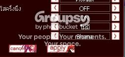
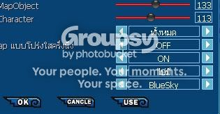


 เป็นประโยชน์มากครับ สำหรับผู้เล่นทุกคนเลย ขอบคุณที่ทำไว้ให้เน้อ
เป็นประโยชน์มากครับ สำหรับผู้เล่นทุกคนเลย ขอบคุณที่ทำไว้ให้เน้อ